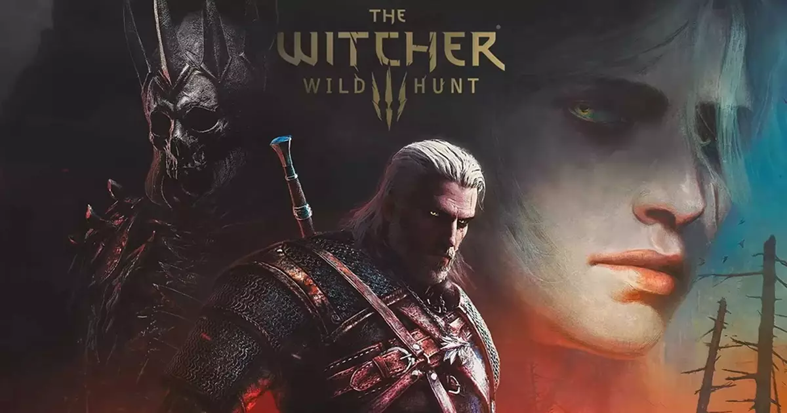

Geralt de Rivia, un cazador de monstruos a sueldo, se embarca en una misión épica para encontrar a Ciri, su hija adoptiva y heredera de un antiguo poder capaz de cambiar el mundo. Atraviesa un continente devastado por la guerra, criaturas salvajes y decisiones morales que marcarán el destino de reinos enteros.
Información del Juego
Desarrollador: CD Projekt RED
Plataformas: PlayStation 4, PlayStation 5, Xbox One, Xbox Series X/S, Nintendo Switch, PC
Género: Rol (RPG), Acción, Mundo Abierto, Fantasía, Aventura
Modo de juego: Un jugador
Fecha de lanzamiento: 19/05/2015
Precio: USD 39.99
ATRAS